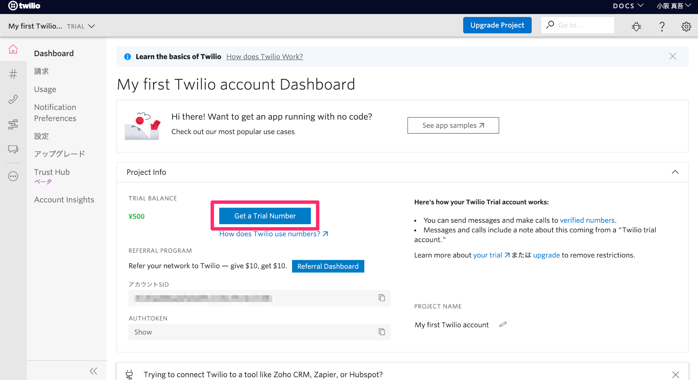
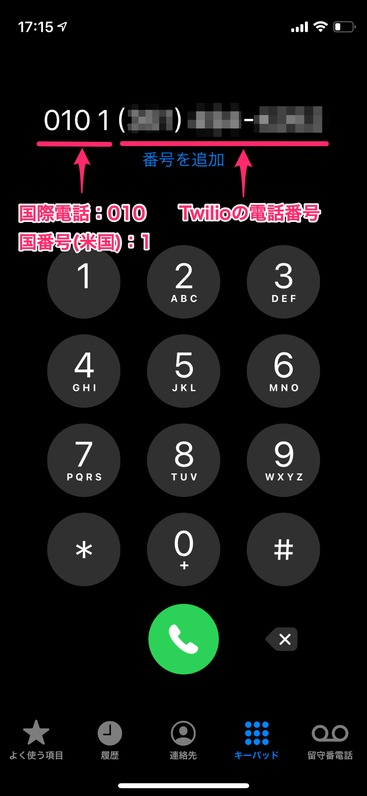

この手順はKTL Learn Advanceにて使用するハンズオン手順です。
この手順は公開しますので復習や展開し自由に使って頂いて構いません。
こちらに詳しく書かれていますが、「電話・SMS をはじめとする各種コミュニケーションを実現するためのAPIプラットフォームサービスです。」
https://cloudapi.kddi-web.com/magazine/twilio-lesson/what-is-twilio-of-the-communication-api
電話以外にも多くの機能があるのですが、今回は電話の機能について触ってみようと思います。(SMSやIP PBXなど他の機能に興味のあった方ごめんなさい)
料金について
料金については次のとおりです。
Twilioの料金・価格｜Twilio - KDDI Web Communications
なお、行政機関で利用する場合は請求書払いが妥当かと思われます。
Twilioの導入・契約は各所属ごとに行なっていただきますが、先方の担当者をご紹介しますので一度デジタル戦略部にご連絡ください。
Twilio では、サインアップ後に一定額分トライアル(お試し)が可能なトライアルアカウントが用意されています。
本日のハンズオンではこちらのトライアルアカウントを利用します。
以降手順を説明していきますが、以下のリンクも適宜参考にしてください。
Twilioのサイトにアクセスします。
https://cloudapi.kddi-web.com/
「無料アカウント作成」を選択します。
「利用規約、重要事項説明、プライバシーポリシーに同意します」にチェックし、「無料アカウントを作成する」を選択します。
アカウント作成のために必要な氏名、メールアドレス(ここでは〜@kobecity.onmicrosoft.comのアドレスを使用)、パスワード(16字以上。ただし同じ文字を3回以上続けて使用できません)を入力し、「株式会社KDDI〜に同意します」にチェックのうえ「無料トライアルを始めましょう」を選択します。
登録したメールアドレスに認証用のメールが送信されます。
受信した認証用のメールに記載のリンクを選択します。
検証用の電話番号(お手持ちの携帯電話等の番号)を入力し、「Verify」を選択します。
指定した電話番号にSMSで検証コードが送信されるので、それを入力し「Submit」を選択します。
トライアルアカウントの作成が完了しました。
作成完了ページのアンケートに回答し「Get Started with Twilio」を選択します。
ダッシュボード画面が表示されます。
トライアル用の電話番号を取得するため「Get a Trial Number」を選択します。

候補の番号が表示されるので「この番号を選択」を選択します。
電話番号の取得が完了しました。
「終了」を選択するとダッシュボード画面に戻ります。
ダッシュボードには先ほど取得した電話番号とトライアルアカウントの利用可能額が表示されています。
ハンズオン①では以下のことを行います。
- 「こんにちは」と話す仕組みを構築
- 神戸市の家庭ごみの分別を案内する仕組みを構築
(引用元) https://www.city.kobe.lg.jp/a04164/kurashi/recycle/gomi/dashikata/shigen/index.html
ホーム画面右側のメニューから「Studio」を選択します。
「Create a flow」を選択します。
これから作成するFlowの名前を入力し「Next」を選択します。(ここでは「KTLハンズオン1」とします。)
「Start from scratch.」にチェックが入っていることを確認し「Next」を選択します。
Flowの作成画面(Editor画面)が開きます。
Editor画面右側の'WIDGET LIBRARY'から「Say/Play」を画面中央'Trigger'の下付近までドラッグ&ドロップで移動させます。
Trigger直下の「Incoming Call」から垂れている赤い丸印を「Say/Play」左上の灰色の丸印へドラッグ&ドロップして繋げます。
Editor画面右側、SAY/PLAYの設定画面の'TEXT TO SAY'の欄に「こんにちは」と入力します。

‘LANGUAGE'の欄を「JAPANESE」に設定します。
'MESSAGE VOICE'の欄は好みの声を選択します。
それぞれを選択したら「Save」を選択します。

Editor画面右上の「Publish」を選択
英語で「フローにn個の改訂を加えました。現在公開されているフローに現在関与しているユーザーは、引き続きそのフローを使用します。公開してもよろしいですか？」と尋ねられるので「 OK」を選択します。
電話番号に作成したFlowを割り当てます。
Editor画面右上の検索ボックスで「電話番号」と検索し、表示された検索結果から'電話番号'を選択します。
対象の番号（ひとつだけ表示されているはずです）を選択します。
開いた画面を下にスクロールしていくと'Voive&Fax'という項目があります。
その項目内の'A CALL COMES IN'のドロップダウンリストを「Webhook」から「 Studio Flow」に変更します。
‘Webhook'が選択されているときはURLが表示されていたテキストボックスに'‘Select a Flow'と変化します。これを選択し、開いたドロップダウンリストから作成したFlow(ここでは「KTLハンズオン」)を選択します。

画面下の「Save」を選択します。
これでトライアル用の電話番号とFlowが紐付き、受電時にFlowが動作するようになります。
確認のため電話をかけてみます。
なお、取得した電話番号はアメリカの番号のため、国際電話で架電する必要があります。
架電の際は、Twilioの番号の前に、「0101」(国際電話:010、国番号(米国):1)を入力します。

架電すると、架電先のアカウントがトライアルアカウントである旨、アカウントをアップグレード(本登録)するとこのメッセージは流れなく旨がアナウンスがされ、何かボタンを押すように促されます。
(携帯電話の機種によりますが)プッシュ操作モードにし、どれか数字キーを押すとご自身で設定したFlowが再生されます。
ここでは「こんにちは」というアナウンスが流れ自動的に電話が切れることが確認できればOKです。
Twilioのホーム画面(Dashboard)に戻り、'TRIAL BALANCE'の項目を見ると、当初より残額が減っていることがわかります。
ここが¥0になるまでトライアルアカウントが利用できます。
Studio画面を開き、作成したFlow(ここでは「KTLハンズオン」)のEditor画面を開きます。
以下のゴミ出しのフローチャートを参考に自動応答システムを作成してみましょう。
https://www.city.kobe.lg.jp/a04164/kurashi/recycle/gomi/dashikata/shigen/index.html
まず、'say_play_1'を選択し、'TEXT TO SAY'の「こんにちは」を「こちらは神戸市家庭ごみ分別フローチャートです。」に書き換えます。
書き換えたら「Save」を選択します。
‘SAY/PLAY'の左にある「＜」ボタンで前の画面に戻ります。
Editor画面右側の'WIDGET LIBRARY'から「Gather Input On Call」を'SAY/PLAY'の下付近までドラッグ&ドロップで移動させます。
「Gather Input On Call」ではユーザーからのプッシュ入力を受け付けることができます。
画面右側が'GATHER INPUT ON CALL'の設定画面に切り替わります。
その中の'TEXT TO SAY'に以下のように入力します。
出したいゴミを４５リットルの袋に入れて口をしっかり結べますか?
結べる場合は１とシャープを、
結べない場合は２とシャープを、選択してください。‘LANGUAGE'、'MESSAGE VOICE' も直前の ‘say_play_1' と同じように設定します。
設定後「Save」を選択し保存します。
‘say_play_1' の左下 'Audio Complete' の下に垂れているグレーの丸をドラッグ&ドロップし、‘gather_1' の左上のグレーの丸と繋げます。
「Split Based On...」を'gather_1'の下に挿入します。
「Split Based On...」では、gatherが受け付けたユーザーからの入力を下に次の処理へ繋げます。
‘gather_1' 右下の 'User Pressed Keys' と、'split_1'とを繋ぎます。

‘split_1' を選択し、'VARIABLE TO TEST'のドロップダウンリストから'gather_1'の'Digits'を選択します。
選択したら「Save」で保存します。
これでgatherの内容を取得する設定ができました。
gatherの内容を取得した後の処理を追加するため、'split_1' の右下の「New」を選択します。
Newを選択し下に表示されるダイアログの「Condition Matches」を選択肢ます。
‘Condition Matches' に対応する項目として、SPLIT BASED ON... の設定画面に'IF VALUE EQUAL TO...' という欄が表示されます。
既に選択されている「Equal To」は'その下の「Enter Value...」の値と一致した場合'を指します。
直前の'gather_1'では「結べる場合は１」「結べない場合は２」を選択させていたので、'Enter Value...'は１が選択された場合と２が選択された場合の2パターンを用意する必要があります。
‘split_1'の次の動作を先に準備します。
なお、フローチャートを参考に、次の動作は下図のようになります。

まず、‘SPLIT BASED ON...'の設定画面左上('SPLIT BASED ON'と書かれた表題の左横)の「＜」を選択します。
上図フローチャートに従いFlowを設定します。
まず配置は以下のとおり。
設定は次のとおり。
なお、Flow間を繋ぐ設定を行っていないため各設定を行っても「Save」を選択し保存することができません。
<say_play_2>
・SAY OR PLAY MESSAGE OR DIGITS ... Say a Message
・TEXT TO SAY ... お捨てになりたいゴミは大型ゴミです。大型ゴミ受付センターにお問い合わせください。
・LANGUAGE ... Japanese
・MESSAGE VOICE ... (好みの声)
<gather_2>
・SAY OR PLAY MESSAGE OR DIGITS ... Say a Message
・TEXT TO SAY ... お捨てになりたいゴミが単品で５キロ以下の場合は１とシャープを、単品で５キロを超える場合は２とシャープを、選択してください。
・LANGUAGE ... Japanese
・MESSAGE VOICE ... (好みの声)
<split_2>
・VARIABLE TO TEST ... wigits.gather_2.DigitsFlowを繋げていきます。
まずはsplit_1を選択します。
‘IF VALUE EQUAL_TO 1'の下は下記画像のように「1」「gather_2」を入力・選択します。
他のFlowも繋げると以下のようになります。
この調子で可能な範囲でフローチャートを再現してみてください。
なお、次のステップがセリフで完結する場合は'Say/Play'、選択肢の場合は ‘Gather Input On Call'を挿入します。
Flowの設定が終わったら、画面右上の「Publish」から公開の設定を行ってください。
架電し想定どおりの動作が確認できればOKです。
ハンズオン②では、電話の発信者のプッシュ入力に応じてデータベースに記録する簡単な仕組みを構築してみます。
今回はデータベースをShare Point、その繋ぎをPower Automateで実装します。
Microsoft365からSharePointを開きます。
SharePointメニュー画面の左上「サイトの作成」を選択します。
サイト名には一位性のある名前を入れてください(ドメイン内で重複していると登録できないため)。
言語の選択は'日本語'に。あとは変更せず「次へ」を選択しサイトを作成します。
次に、作成されたサイトの左上から「新規」→「リスト」を選択してください。

「空白のリスト」を選択してください。
名前を設定し、「作成」を選択してください。
作成されたリストに「タイトル」という列が自動的に作成されているため、こちらを「証明書番号」に変更する。
「タイトル」の右側の▽から「列の設定」→「名前の変更」と進み名前を変更してください。
「証明書番号」列の右側の「+ 列の追加」→「一行テキスト」を選択します。
列の名前は「必要通数」としてください。
Microsoft365からPower Automateを開きます。
新しいフロー→インスタントクラウドフローを選択してください。
画面右側'このフローのトリガーする方法を選択'から「HTTP要求の受信時」を選択し「作成」を選択してください。
フロー作成画面が表示されるので「+新しいステップ」を選択します。
検索バーに「変数を初期化」と入力すると、候補のアクションに「変数を初期化する」と表示されますので、これを選択します。
名前の欄に「id」と入力します。
種類の欄はドロップダウンリストから「文字列」を選択します。
値の欄を選択すると右側に値の候補が表示されます。
今回はここから「本文」を選択します。なお「本文」は仮の設定のため後程変更します。
最初のステップを登録した時点で保存が可能になるため、ここで一度保存しておきます。
(以降、こまめに保存するようにしてください。)
フローの名前は画面右上から変更が可能です。
(ここでは「Twilio受付テスト」に変更します。)
ステップの名前はステップタイトルバー右側の「...」から「名前の変更」を選択することで変更が可能です。
以降「変数の初期化」がもう一度出てくるため、このステップの名前を「変数の初期化(id)」に変更しておきます。
一つ前のステップ「HTTP要求の受信時」を選択し編集画面を開きます。
この中の要求本文のJSONスキーマの設定を行います。
今回の仕組みでTwilioから送信される処理要求は「JSON」という形式で送られてきます。
この送られてきたJSONのデータのスキーマ(型)を定義しなければPowerAutomate側で情報を扱うことができません。
要求本文のJSONスキーマの欄に以下のテキストをコピー&ペーストしてください。
{
"type": "object",
"properties": {
"id": {
"type": "string"
},
"quantity": {
"type": "string"
}
}
}この作業でTwilioから送信されるJSONデータを認識することができるようになりました。
再び「変数を初期化(id)」を選択し編集画面を開きます。
値の欄の「本文」を一旦消し、再び選択肢を確認すると「id」と「quantity」が追加されています。
ここでは「id」を取得したいため「id」をセットします。
「新しいステップ」から再び「変数を初期化」を選択します。
ここでは名前を「quantity」、種類を「文字列」とします。
また、ステップ名を「変数を初期化する(quantity)」に変更しておきます。
値の欄には「quantity」をセットします。
「新しいステップ」から「項目の作成」と検索します。
するとSharePointのアイコンで「項目の作成」と表示されますので、そちらを選択します。
サイトのアドレス欄を選択すると、ご自身の権限で選択できるSharePointのサイトがドロップダウンリストに表示されます。先ほど作成したサイトを選択してください。
次にリスト名の欄を選択すると、先ほど選択したサイト内にあるリストがドロップダウンリストで表示されますので、先ほど作成したリストを選択してください。
リストを選択することでリストの項目がリスト名の下に追加されます。
各項目の値は候補の一覧の「変数」から選択してください。
(Title＝id、必要通数＝quantity)
なお、「HTTP要求の受信時」と書かれた項目の下にも同じ名前の値が表示されていますので間違いのないよう注意してください。
設定は以上となりますので、ここで保存してください。
最後に、再度「HTTP要求の受信時」を選択し、'HTTP POSTのURL'に記載されているURLをコピーしてどこかに控えておいてください。(コピーはURL欄右側にボタンがあります。)
TwilioのStudioを開き、新しいフローを作成します。
※ハンズオン名は「KTLハンズオン2」などとしておきます。
※それ以外の流れについてはハンズオン①のときと同じです。
まずは冒頭のアナウンスをSay/Playでセットします。
(例では「こちらは証明書再発行受付センターです」とアナウンスさせています)
次にgatherをセットし、ユーザーからの入力を受付られるようにします。
(例では「再発行を希望される証明書の番号を入力し、最後にシャープを選択してください」とアナウンスさせています)
splitを挿入しgather_1で入力された内容を一旦受け取ります。
(このあともう一度gatherで入力を受け付けるため、gather_1に対する処理はここでは行ません。)
再びgatherを挿入し、必要通数の入力を求めます。
(例では「再発行を希望される通数を入力し、最後にシャープを選択してください」とアナウンスさせています。)
直前のsplit_1からgather_2への繋ぎは(split_1の'New'から登録)、「Is Not Blank」(何らかの入力があれば)「gather_2」(gather_2の処理へ進む)と設定しています。
splitを挿入し、gather_2の情報を受け取ります。

‘Make HTTP Request'の項目をドラッグ&ドロップでsplit_2へ移動させます。
REQUEST URL に先ほどPower Automateの操作の最後に控えたURLを入力します。
CONTENT TYPEは「Application/JSON」を選択(これでJSONでリクエストを飛ばします。)
REQUEST BODYには以下をコピー&ペーストしてください。
{
"id": "{{widgets.gather_1.Digits}} ",
"quantity": "{{widgets.gather_2.Digits}}"
}
split_2からhttp_1への繋ぎはsplit_1からgather_2への繋ぎと同様、「Is Not Blank」「http_1」とセットしてください。
http_1が成功した時/失敗した時の処理をSay/Playで設定します。
(ここではSuccessの際に「申請を受け付けました。
証明書は一週間を目処にお送りします。
万が一届かない場合は、大変お手数ですが、電話番号、神戸、ぜろななはち、いちにいさん、しいごおろくななまで、お問い合わせください。
ご利用いただきありがとうございました。
」と、Failの際に「申請の受け付けに失敗しました。大変申し訳ありませんが、再度おかけ直しください。」とアナウンスさせています)
入力誤り等も考慮し全体を組むとこんな感じになります。
Editor画面右上の「Publish」を選択し、設定を保存します。
今の状態では、ハンズオン①が電話番号と紐づいているため、最初に電話番号とフローを紐付けたときと同じ要領でハンズオン②のフローに紐付け直した上でテストを行ってください。